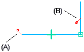

Lock command
The Lock command controls elements and keypoints, so they cannot be modified during certain operations. The Lock command is available for 2D and 3D sketches and in draft.
When you add a lock relationship (A) to a keypoint, the elements that meet at the keypoint cannot be modified using that keypoint, but are free to move at their other keypoints. When you add a lock relationship to an element (B), the entire element cannot be modified.

-
In 2D profile sketches and in draft, the Lock command is available on the Sketching tab→Relate group.
-
In 3D sketches in part, sheet metal, and assembly, the Lock command is available in the 3D Sketching tab→3D Relate group to lock a keypoint or element in a 3D sketch, so that additional constraints are not required to fix its position.
For information about sketch relationships, see Working with geometric relationships.